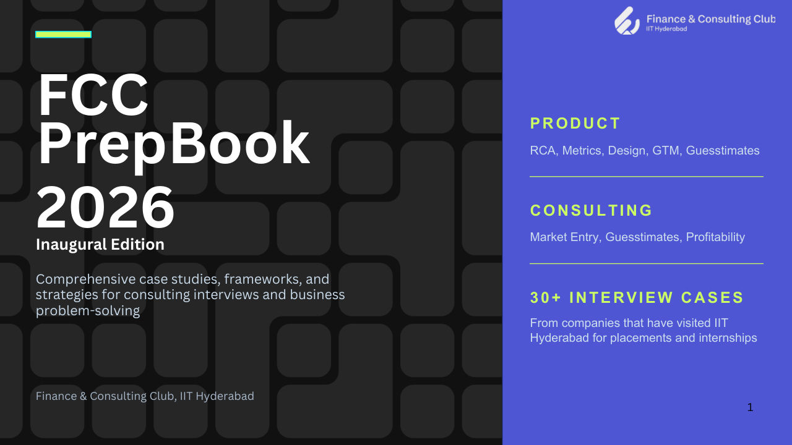

I'm a final-year B.Tech student at IIT Hyderabad, originally from Kalyan, Maharashtra. Alongside my degree in Civil Engineering, I'm doing a double major in Entrepreneurship and a minor in Economics.
A big part of my time in college went into the Finance & Consulting Club, where I was Head of Consulting. We grew ProdX, our product case competition, to over 4,000 participants, and put together the club's first PrepBook for product and consulting interviews.
This summer I interned at American Express as a Data Science & Analytics intern in the Global Risk & Compliance team, where I worked on automating country risk assessment and reporting. Right now I'm the Head Placement Coordinator for the Civil department at the Office of Career Services, IIT Hyderabad.
What I enjoy most is understanding why people use a product the way they do, and then using data to decide what to fix or build next.
Catch me any time to talk about a product feature you love (or hate), the latest Instagram trend, or just for a casual game of badminton.
Work experience
AMEX
Data Science & Analytics Intern, American Express
Global Risk & Compliance · May 2026 – July 2026
Automated the full Country Risk Assessment & Reporting workflow, from pulling data and processing it to calculating country risk scores and generating reports.
Expanded coverage from 26 countries to all 195 UN-recognised countries, scored on 17 economic, financial and country-level parameters, so new markets can be assessed the same way.
Built the pipeline with Power Query, API integrations, Excel, SQL and Custom GPTs.
Worked with risk and compliance teams to agree on reporting requirements before standardising the process.
120 → 40 hrsmanual effort
26 → 195countries covered
17risk parameters
Projects
14 projects
Product analytics
Capital Bikeshare: who to convert, and where bikes run out
Went through 1.3M+ rides to answer two questions. Which casual riders should be on a membership? And why do some stations run dry every morning? Found 11.4k casual riders already spending more than the $10/month membership, worth about $38.4k a year if converted. SQL flow analysis showed peak imbalances of over 1,000 bikes, driven by commuters. Wrote a PRD and built a KPI dashboard, including a crowdsourced rebalancing idea that projects 87% lower costs.
PostgreSQL · Power BI · DAX
11.4k
casual riders above the membership break-even
User research · Design
LaundrySync: fixing the hostel laundry queue
Hostel laundry is a daily headache: you walk down to find every machine busy, or one sitting idle with someone else's clothes in it. I spent two days watching how people used the laundry room and ran 20+ interviews. The main problems were idle machines, timers nobody trusted, and awkwardness about moving other people's clothes. I turned that into personas and requirements, then designed a clickable Figma prototype with live machine availability, notifications, and a 15-minute grace period before your clothes can be moved.
User interviews · Root cause analysis · Figma
20+
user interviews over 2 days of observation
Lean startup
PackLight: testing a smart suitcase before building one
Hardware is expensive to get wrong, so we tested demand first. We ranked four hypotheses (do people want it, will they pay, can we build it, will they use it again) by impact and uncertainty. Then we ran a Wizard-of-Oz MVP with 25+ target users. Purchase intent came in at 75%, above the 60% bar we set, so unit economics is the next thing to test.
Lean experiments · MVP design · Streamlit
More projects
Marketplace discovery funnel
Looked at 15.5M+ search and product interactions to see where users drop off between search and purchase. Across 69 categories, found a 1.06 pp gap in post-cart conversion compared with the peer benchmark, and built a Power BI dashboard to track it.
Ran NLP on 9.6K+ Google Play reviews, 80.7% of them one-star. Grouped the complaints into 5 pain points (refunds, pricing, support, payments and app stability) and suggested a fix for each.
Python · Orange · NLP
Picapool: campus go-to-market
During my internship at Picapool, a location-based app for sharing resources on campus, I studied competitors and sharing habits across 10+ campuses, helped refine positioning, and proposed growth ideas to bring down acquisition cost.
Market research · GTM
Customer segmentation
Split 2,236 customers into 4 personas with K-Means. "Premium Loyalists" were 23% of customers but about 52% of spend. Also built a campaign response model (0.913 ROC-AUC) to target the right people.
Python · Scikit-learn
Credit card fraud detection
Compared Logistic Regression, Decision Tree, Random Forest and KNN on 284k+ transactions. Random Forest did best on the fraud class, with 0.99 precision and 0.87 recall.
Tried 6+ approaches, including GRUs, Transformers and retrieval, and ended up with a Transformer ensemble that wins 52.2% of games on 12K unseen words.
Used Differential Evolution and CMA-ES to find better particle-size mixes for high-strength concrete. R² of 0.978 (UHPC) and 0.985 (HSC). DE ran in 7.03s against 9.18s for CMA-ES.
Python · Optimisation
FinAgent
Five AI agents that analyse the market, propose a strategy, plan execution and argue against it on risk. Every LLM output is checked against real indicators like RSI, MACD and volatility.
Tracks product prices and offer conditions, then tells you whether to Buy, Wait or keep watching, with a confidence level and anything it couldn't check.
Python · Streamlit · Gemini
SyncSpace
Watch videos with friends in sync. Handles playback conflicts on the server with Redis, corrects drift, and recovers when someone reconnects. Covered by 83 tests.
Next.js · Redis · Socket.IO
DevQuest
A multiplayer coding arena where people edit the same code live and run it in JavaScript, Python or C++.
Some products I find interesting, and what I'd change about them.
SB
Swiggy Bolt
Food delivery Food in about 10 minutes, from restaurants close to you, on dishes that are quick to make.
Who uses it
People ordering on impulse: a late-night snack, a quick coffee, lunch between meetings.
Users who already order on Swiggy and now compare it with quick commerce apps that deliver in 10 minutes.
How it works
Bolt doesn't build new kitchens. It reuses Swiggy's existing restaurants, but only shows ones within a short distance of you, and only for items that take a few minutes to prepare, like beverages, rolls or packaged desserts. Short distance plus short prep time is what makes 10 minutes possible.
The time split is an illustration, not Swiggy's data.
What's working
No new kitchens to build, so Bolt can launch in a city fast, using restaurants Swiggy already works with.
It answers the "why wait 35 minutes?" habit that quick commerce has trained people into.
Small, simple items are also the ones people order often, so it can push order frequency up.
What's not
The 10-minute promise depends on the kitchen. If the restaurant is busy with dine-in or other orders, the promise breaks, and the user blames Swiggy.
The menu is narrow, so users often open Bolt, don't find what they want, and leave.
A hard 10-minute target puts pressure on delivery partners on the road.
It's unclear if Bolt brings new orders or just moves normal orders to a faster, more expensive delivery.
What I'd build
Kitchen-aware Bolt
Decide Bolt eligibility live, not once. Each restaurant shares a simple "busy / normal" signal (or Swiggy infers it from how long recent orders took to be marked ready). When a kitchen is busy, its items quietly drop out of Bolt and show normal delivery time instead. Users see fewer options at peak hours, but the ones they see actually arrive in 10 minutes.
Trade-off: Bolt will look emptier at lunch and dinner, exactly when demand is highest. I'd accept that, because one broken 10-minute promise does more damage than a missing option.
Main metric
Share of Bolt orders delivered within the promised time
Is it working?
Repeat Bolt orders per user per month, fewer late-order complaints
Watch out for
Bolt orders per day, restaurant prep times, rider speed and safety
Me
Meesho
E-commerce Very low prices, zero commission for sellers, built for shoppers in smaller towns.
Who uses it
Value-focused shoppers, many in tier-2 and tier-3 towns, often buying online for one of their first times.
Small sellers and manufacturers, for example from Surat or Tiruppur, who can't afford big marketplace commissions.
How it works
Meesho doesn't take a commission from sellers. It makes money from sellers paying for ads and from logistics. With no commission, sellers can price lower, and lower prices pull in shoppers who would never pay Amazon or Myntra prices. A lot of these orders are cash on delivery, because many first-time buyers don't trust paying upfront.
What's working
Zero commission is a strong reason for small sellers to list here first.
Prices are low enough to win shoppers who were never on other e-commerce apps.
The feed feels like scrolling social media, which suits people who browse more than they search.
What's not
Quality varies a lot. What arrives doesn't always match the photo, especially for size and fabric.
Cash on delivery means buyers can refuse at the door at no cost. The parcel then goes back to the seller (called RTO, return to origin), who pays shipping twice.
High returns and refusals eat into thin seller margins, which pushes sellers toward cheaper, lower-quality products.
Bad experiences make shoppers doubt the whole app, not just one seller.
What I'd build
"Reserve with ₹19" for cash on delivery
At checkout, COD buyers can pay a small token amount online (say ₹19) to reserve the order, which gets knocked off the final price. In return they get something they value: a small discount, faster dispatch, or free returns. Buyers who pay the token are much less likely to refuse at the door. Plain COD stays available, so nobody is locked out. Real buyer photos on product pages, especially for clothing, would sit alongside this to reduce "this isn't what I ordered" returns.
Trade-off: Any step at checkout loses some orders. The bet is that the orders lost are mostly the ones that would have been refused anyway.
Main metric
Share of COD orders that get delivered and kept
Is it working?
RTO rate for sellers, share of buyers choosing the token option
Watch out for
Checkout conversion, orders from first-time buyers, seller earnings
Ja
Jar
Fintech Save small amounts every day in digital gold, starting from ₹10, on autopay.
Who uses it
Young earners and first-time savers who feel investing is complicated or only for people with lots of money.
Families who already trust gold as a way to save, but buy it in big chunks once or twice a year.
How it works
You set a daily amount, as low as ₹10, and Jar uses UPI AutoPay to buy digital gold for you every day. It can also round up your spends and save the change. You don't make a decision each day, which is the whole point: saving happens by default, in an asset Indian households already trust.
Simple maths, before gold price changes and the 3% GST charged on gold purchases.
What's working
₹10 a day feels like nothing, so starting is easy.
Autopay removes the daily willpower part of saving.
Gold needs no explaining in India. Nobody has to learn what a mutual fund is first.
What's not
Digital gold isn't regulated by SEBI or RBI the way mutual funds or bank deposits are, which users rarely realise.
The buy-sell price gap and 3% GST mean that small, short-term savings can lose value if you withdraw soon.
There's no goal. Savings with no purpose are easy to pull out the first time money is tight, and easy to pause.
Once the novelty wears off, many people stop opening the app at all, even if autopay keeps running.
What I'd build
Savings goals with a real-world finish
Let users save toward something specific: Diwali shopping, a sister's wedding gift, a gold coin for Akshaya Tritiya. Each goal shows a progress bar, a target date, and the option to get the goal as physical gold at the end. When someone tries to withdraw early, show what they'd lose on the spread and how close they are to the goal. Show the costs clearly up front too, so trust holds when people find out.
Trade-off: Being upfront about GST and the spread may scare off a few new users. I think that's better than users discovering it later and leaving with a bad taste.
Main metric
Users still saving 6 months after they started
Is it working?
Share of savers with a goal, goals completed, early withdrawals
Watch out for
Sign-up conversion, autopay cancellations, complaints about charges
Px
Perplexity in India
Consumer AI An AI answer engine with sources, handed to millions of Airtel users for free.
Who uses it
Students and young professionals who want a direct answer instead of ten blue links.
Airtel customers who got a free year of Perplexity Pro through the Airtel Thanks app, many of whom had never used an AI tool.
How it works
You ask a question, and Perplexity searches the web, writes one answer, and shows the sources it used. That's the difference from a plain chatbot: you can check where each claim came from. In India, its big move was distribution. Instead of fighting Google for downloads, it partnered with a telecom company and reached a huge user base in one step.
Bar widths are an illustration of the shape, not real numbers.
What's working
Answers come with sources, which makes them easier to trust than a chatbot that just sounds confident.
The Airtel deal got it to scale in India far faster than ads ever could.
Pro gives access to several top AI models in one app, which is good value if you'd use it.
What's not
A free gift doesn't build a habit. Plenty of people activate it, try a few questions, and drift back to Google or ChatGPT.
Most first-time users don't know what to ask it. A blank search box doesn't teach you anything.
It still feels English-first, while a lot of India searches in Hindi and other languages, often by voice.
When the free year ends, people who never built a habit won't pay.
What I'd build
Start from Indian daily jobs, not a blank box
For new Airtel users, open with three cards built around things people already do every week: "Compare two phones before you buy", "Explain today's news in Hindi", "Help me prepare for my exam or interview". Each one starts a guided flow with voice input in the user's language. Then a weekly nudge brings people back with a question related to what they asked before. The goal is for every user to find one reason to come back before the free year ends.
Trade-off: Guided flows make the product feel narrower to power users. I'd show them only to new and inactive users, and keep the plain search box for everyone else.
Main metric
Airtel-activated users still asking questions weekly after 8 weeks
Is it working?
Questions per user per week, non-English and voice usage
Watch out for
Answer quality ratings, cost per query, paid conversion at month 12
Leadership

FCC PrepBook 2026
As Head of Consulting, I led the first edition of the club's PrepBook along with my team. It's a guide for engineering students who are new to product and consulting interviews. It includes 30+ real interview cases from companies that recruit at IIT Hyderabad, covering product design, metrics, root cause analysis, go-to-market, guesstimates, profitability and market entry.
Head Placement Coordinator, Civil Department
Apr 2026 – Present
Office of Career Services, IIT Hyderabad
Lead placements for 120+ students and a team of 15 placement coordinators.
Reach out to 50+ companies across core engineering, tech, analytics and management.
Coordinating Japan Day 2026 and Career Fair 2026, with 75+ companies taking part.
Head of Consulting
May 2025 – Apr 2026
Finance & Consulting Club, IIT Hyderabad
Led an 18-member team running the club's consulting domain.
Grew ProdX, IIT Hyderabad's flagship product case competition, from 650 to 4,000+ participants by reworking outreach.
Started the first Campus Case Challenge (120+ participants, problems from 2 campus brands) and Elevate, a workshop series for 150+ students from other Hyderabad colleges.
Designed Consult Summer School '26, a 6-week programme for 150+ members, and ran 8+ Case kNights sessions for 300+ students.
Ran 3 product and consulting events at Horizon '26, the management fest, which drew 5,000+ footfall.
Consulting Coordinator
May 2024 – Apr 2025
Finance & Consulting Club, IIT Hyderabad
Selected from 120+ applicants to run consulting activities for a 700+ member community.
Ran the Associates Program for freshers (130+ applications) and mentored 8 members.
Designed an inter-hostel case competition across 20+ hostels, and ran ProdX end to end with 650+ registrations.
PR & Marketing Coordinator
May 2024 – Apr 2025
TEDxIITHyderabad
Doubled the Instagram following with story-led content and platform-specific campaigns.
Made reels that crossed 16k+ views, and promoted X-Masterclass through school outreach.
Toolkit
Product
PRDsUser researchDesign thinkingProduct metricsFunnel & cohort analysisRoot cause analysisUnit economics